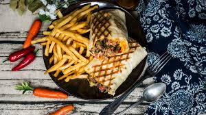

Home
Frensh tacos

Description
A unique invention, the French taco has little in common with a traditional Mexican taco. Now a fast-food staple in France and beyond, this griddled meal can contain practically any filling, so long as it fits in a flour tortilla. Learn more about the origins of French tacos and how to make them at home.
What are French tacos
French tacos (“tacos” can be plural or singular) consist of late-night staples like french fries and chicken fingers topped with cheese, folded into a flour tortilla, and cooked on a griddle. While French cuisine usually conjures images of rich, heavy dishes redolent of butter and cream, this simple sandwich has become popular nationwide (and beyond).
ingredient
- 6 chicken fingers:frozen, homemade, or store-bought
- 1½ cups french fries:frozen, homemade, or store-bought
- ½ cup crème fraîche:
- ½ cup Gruyère:shredded
- ¼ cup fresh dill:finely chopped
- Kosher salt:to taste
- Freshly ground black pepper:to taste
- 4 large flour tortillas
- 1 cup cheddar cheese:shredded
- Ketchup or other condiments (optional)
How to make a Frensh tacos step-by-step
You will find the full, step-by-step recipe below:
- Preheat the oven to 400 degrees Fahrenheit.
- Cook the chicken fingers and french fries according to the package or recipe directions. Skip this step if using leftover or store-bought chicken and fries.
- In a small pot, melt the crème fraîche and Gruyère together.
- Season the cheese sauce with dill, salt, and pepper.
- Place the tortillas on a flat, clean surface.
- Divide the cheese sauce between the tortillas and spread it into an even layer.
- Divide the chicken, french fries, and shredded cheese between the tortillas.
- Add a squiggle of ketchup or other condiments, if desired.
- Add a squiggle of ketchup or other condiments, if desired.
- Bake the tacos until the tortillas are light brown, the cheese has melted, and the filling is warm, about 15 minutes.
- Let the tacos cool for 5 minutes before cutting each one in half with a sharp knife.
You are now ready to eat, enjoy !